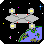
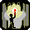
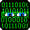
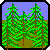
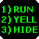
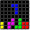

Games (style guide)
Источник: http://www.ifwiki.org/index.php/Main_Page
Proposed layout for a game entry.
Page name
Whenever possible, use the game's title for the name of the page about it.
If the game's title is identical to another game's title, and both are equally well-known (or equally unknown), append "(by author's-surname)" to the page name. For example: Three Doors (by Løvborg) and Three Doors (by Berman). Also use this approach for the lesser of two games when one game of the pair is well-known and the other is not, e.g.: The Hobbit (by Makarov). The well-known game, The Hobbit, should not have to use a "(by surname)" phrase.
If the game's title is identical to another page (but the second page isn't about another game), then you can simply append "(game)" to the page name about the game. For example: Darkness (game).
If the game doesn't have a title, name the page "untitled (story-file-name)". For example, untitled (onion2.gam).
Row of Icons
Not a named section, but a row of icons that lets a reader see at a glance which genres the game belongs in, which competitions it was entered in, and which awards that the game has earned.
The entire row of icons probably needs to be enclosed in a html construct that'll reserve an entire horizontal slice of the page for the icons. This is a bit icky that we seem to need to do this, but you'd be surprised how easily page elements will fall into stupid arrangements if you're not careful. Try something like this:
<table style="width:100%;margin-bottom:1em;clear:both"><tr><td> icon templates go here </td></tr></table>
- NOTE: Reports are coming in that the games pages looked horrible in Firefox, Mozilla, etc. Anything that isn't IE. One suggestion was to add clear:both to the div box. I hope (cross-fingers) that it stops the horror of overlapping boxes everywhere. -- David Welbourn 16:58, 13 February 2006 (EST)
- NOTE 2: Grr. Divs just aren't working, for some reason. There's still overlap with them. Go with table tags. -- David Welbourn 17:48, 13 February 2006 (EST)
Genre Icons
Each genre icon must be exactly 50 by 50 pixels in size so they'll group together nicely. (Or at least that's the theory; if the font size of the text underneath is too wide, they'll space out unevenly anyway.) Each icon must also have a text equivalent underneath.
Each icon is specified by a template, usually with the same name as the text we want displayed underneath. For example, to insert the Ship icon, you'd use {{ship}}. Two exceptions: the Porn/Erotica icon is {{porn}}, and the Science-Fiction icon is {{sci-fi}}.
These are the genre icons we have so far; we may add more later.
Literary Genres
- Adventure
- Comedy
- Drama
- Espionage
- Fantasy
- Horror
- Mystery
- Porn / Erotica
- Religious
- Romance
- ScienceFiction
- Slice of life
- Superhero
- Surreal
- Western
Geography Genres
- Building
- City
- Crazy quilt
- Farm
- Fort
- Home
- Island
- Microspace
- One-room
- Outer space 
- Park
- School
- Ship
- Underground 
- Virtual reality 
- Wilderness 
Style Genres
- CYOA 
- Non-IF 
- RPG
- Genre wanted
Competition/Award Icons
Partipication in competitions and awards are represented by various icons. The icons go in a box and are labelled within the box with the competition name and some comment of how the game placed at the comp or which prize it was awarded. These boxes go right after the genre icons in the row of icons.
There are various templates to make adding these finnicky boxes easier; see the IFWiki:Competition icons page for more details.
Opening paragraph
The opening paragraph, if any, should be short and sweet. It goes second on the page. If everything else goes where it's supposed to, the opening paragraph will appear under the row of icons, and above both the table of contents and the infobox.
Game infobox
There should be a table of standardized data about the game that floats on the right-hand side of the page. This is done with the template Game infobox. It should be specified after the row of icons and all opening paragraphs so that the top edge of the infobox will line up with the top edge of the table of contents to its left.
Currently, there's only this one form of the infobox, and it isn't flexible. (I haven't yet figured out how to make it flexible -- David Welbourn.) Every parameter of the infobox must be specified; you cannot nicely leave out parameters or assume that default values will go in. Sorry about that, but I just don't know how to get that to work.
Anyway, here are the parameters you need to fill out and what they mean:
- title. This is the title of the game. If the game is known by more than one title, separate them with
tags and preface the 2nd through nth names with "a.k.a."
- On rethought, putting multiple titles in this location doesn't look too good, especially if one wants to comment about the translated name of a non-English title. Ideally, we just want the first or best known name of the game here. Commentary about a game title, if brief, can be put in the opening paragraph. If there's a lot to say about the game's title, then put the commentary in the Trivia and Comments section. Thanks.
- image. This is reserved for games that have an associated image. Maybe it's a photo of the box cover that the game came in. Maybe it's a title screen graphic. Maybe it's a logo from the game's homepage. See the cover art style guide for how to upload and link to images. For most games, however, just leave the image parameter empty, eg: image=
- author. Name all the authors, separating with commas and "and" as appropriate. Don't use ampersands (&). Enclose names with double square brackets so they'll become links to the authors' pages.
- publisher. Name the publishers. If there's no publisher, just use n/a as the publisher.
- released. The release date. I prefer the dd-Mmm-yyyy format for the date.
- authsystem. The authoring system used to write the game. If you don't know what it is, use TBD or unknown.
- platform. The list of platforms that the game can be run on.
- language. The human languages used in the game, eg: English, Italian, Spanish, etc.
- license. The license(s) that the game was released under. Most amateur games are simply Freeware, but others might be Commercial, Former commercial, some form of the Creative Commons license, and so on.
- color. Does the game change the text color or background color behind the text?
- none if the game uses default text colors, or sets the colors to non-default colors at the start of the game, but doesn't change them thereafter.
- optional if the game does change the colors in midgame but only for cosmetic reasons. A player unable to see the color change (eg: blind player or player using a black-and-white only 'terp) can still play and finish the game.
- required if the game does change the colors in midgame and the player must be able to see them in order to play and finish the game. Blind players would be unable to play a game with required color.
- graphics. Does the game use graphics at all? Answers could include none, optional, or required. In the latter two cases, more info is wanted: what types or graphics and how are they used? (We'll probably want to standardize this.)
- none if the game does not include graphics.
- optional if the game does include graphics, but a player unable to see the graphics (eg: blind player or player using a text-only interpreter) can reasonably play and finish the game without missing anything essential.
- required if the game does include graphics, and the player must be able to see the graphics in order to play and finish the game. Blind players would be unable to play a game with required graphics.
- sound. Does the game use sound or music at all?
- none if the game does not use sound or music.
- optional if the game does use sound or music, but a player unable to hear the sound (eg: deaf player or player using a computer without working speakers) can reasonably play and finish the game without missing anything essential.
- required if the game does use sound or music, and the player must be able to hear it in order to play and finish the game. Deaf people would be unable to play a game with required sounds.
- cruelty. Where does the game rank on Andrew Plotkin's cruelty scale? If you don't know, use TBD. The Game info template will automagically turn the value into an appropriate link.
And here's an example of it all put together:
{{game infobox|title=Galatea|image=|author=[[Emily Short]]|publisher=n/a|released=2000|authsystem=[[Inform]]|platform=[[Z-code]]|language=English|license=[[Freeware]]|color=none|graphics=none|sound=none|cruelty=Merciful}}
In the future, we may have other infoboxes defined that specifies include different info or leaves some of the above info out; we'll let you know how that works when we figure it out.
How It Begins
In this section, we want to give a taste of the game by telling how it begins. One must not give spoilers or give away any obvious secrets of the game. Do not insert a screenshot or a text dump directly copied from the game's scrollback. Restrict your description to the following:
- If the player is warned upfront about sexual content, violence, vulgarity, adult situations, interpreter requirements or display options, write a short paragraph that summarizes these warnings.
- If the player is asked to fill out a questionnaire right at the beginning—for example, to choose the PC's name or gender—then write a short paragraph that summarizes the nature of the questionnaire.
- The main paragraph should begin by stating who the initial PC is, or thinks he or she is. Include the PC's name if the player or PC knows it. Do not spoil games where the PC's identity is a puzzle or difficult to determine.
- Continue the main paragraph stating where the PC thinks he or she is, who is nearby, and what the PC is carrying and wearing.
- Conclude the main paragraph with what immediate goals that the PC is presented with, if any. If the PC has no obvious goal at first, but one presents itself within ten turns of play, then that goal may be stated.
- Another very short paragraph may be added to describe the scope and general impressions of the rest of the game: will you be exploring worlds, a city, or just one building? Is the game silly or serious? Puzzle-filled or story-driven? Try to be very terse and objective.
- If the game contains sexual content, violence, vulgarity, adult situations, or other potentially disagreeable elements, provide a terse warning where the paragraph begins with "WARNING:". Do this regardless if you've already said that the game warns you about any of it.
Note that new games pages may be created with a How It Begins section that is empty except for:
{{hib wanted}}
Use of the hib wanted template will note that this section needs to be written and automatically add the page to the HIB wanted category.
Notable Features
This optional section may be used to list ways in which this game does things differently from the normal IF game. Think about all the features of the game, including the game mechanics and game display.
- Does the game do something innovative or clever?
- Have IF standards or conventions been changed?
- Does the game use any standard tropes?
- Are there extra features of note?
- Are there in-jokes that ought to be explained?
- Is this game the first to do something? The only game to do something?
NOTE: Standard features are NOT notable
In particular, it is not notable that a game is written in Inform or Adrift. It is not notable that that game can be run on the Commodore-32. It is not notable that a game was in a competition. It is not notable that a game won an award.
Why not? Because we noted these things elsewhere on the page. This section is for other stuff you probably want to say about the game. The things done well. The things done badly. The things done strangely. This is not the place for same-old same-old statistics. Tell us something new.
Trivia and Comments
Optional section for miscellaneous stuff we want to say about the game that doesn't easily fit into any of the other sections. In a bulleted list, please.
Author's Comments
Completely optional; this section should only be completed by (or at the request of) the game's author(s).
I'm not really sure what an author might want to put here, but I'm sure authors will think of something. Maybe thank testers or have a story about the crafting of the game. Maybe talk about plans for a sequel or upgrade or port. That's cool.
What I don't want here are game spoilers, exhibitions of bad sportsmanship, or extravagent ads with huge graphics. Please and thank you.
Versions
For every distinct version, craft a little section like this:
Version Name
- Game Title (authors/porters/etc; release date; platform; language if not English).
- Additional credits, e.g: Illustrator or Musician, if any.
- Testers: List of credited beta-testers, if any.
- Release 1 / Serial number 060718 / Inform 7 build 3T38 (I6/v6.31 lib 6/10N)
- {{babel|ifid=XXXXXXXX-XXXX-XXXX-XXXX-XXXXXXXXXXXX}}
- Competition: Where it placed (out of X games), and which awards it received.
- Files: List of filenames (filesize; optional short description; download links).
- Additional notes about this version can appear after the formal bulleted list.
Versions should be listed in chronological order, oldest version first.
The version name should be the most natural way to refer to the given version. Examples of version names: "Version 1", "Release 1.2", "Original version", "Competition version", "Spanish translation", "Hugo port".
Not all games have release lines, but we'd like to record it if there is one.
- For Inform games, use the "version" command to display the banner which includes the release line.
- For ADRIFT games, the release line is the "Last updated: XX XXX XXXX" line which gets displayed by the ADRIFT Runner via the "about" command or by selecting the Help|Adventure... menu item. (CAUTION: Don't confuse this with the "version" command which shows when the Runner was last updated!)
Determine the IFID by using the babel utility and use the babel template. (Games written in Inform 7 usually display the IFID as part of an extended banner in response to the "version" command.) Each version of a game might have a different IFID; include the babel template for each one. If in a rush, or if the IFID can't be easily determined, please use the {{babel wanted}} template instead so future editors know that the IFID still needs to be determined for this game.
The list of files may itself be a bulleted list, if that makes things clearer. Most files would have the short description "story file", which may be omitted. Other files should be marked as optional or required as appropriate, e.g.: "optional feelie map".
Further reading
This section should be a bulleted list of off-line references to the game. We're talking about books and printed magazine articles; not everything is on the web, after all. We're more likely to need this section for older games, particularly from the commercial era of IF in the 1980s.
(More details about this section to come as we hammer them out.)
Links
At first, we probably aren't going to be too fussy about how game-related links are arranged in this section, since it's more important to document the URLs first, and make it look pretty second.
However, that said, we do have some preferences for this section.
First of all, all download links and play it online links should NOT be in the Links section, but in the Versions section instead. People will want to know if they're downloading version 1 or 3; that's best done by putting those links with the rest of the version info.
Second, we'll want to group links into related subcategories when we get a big handful of them. The subcategories are General Info, Reviews, and Spoilers.
General Info
Note: We won't need to label this subsection explicitly.
- Homepage of the game. This link, if available, should go first.
- Author's Notes page, if any, and if different from the homepage.
- Links to database sites and other wikis. IFWiki provides a handful of templates for adding the appropriate links:
This template... renders like this.
| {{baf game|Adventure|1}} | Adventure - at Baf's Guide |
| {{baf wanted}} | Baf's Guide line wanted. (Please replace this line with a baf game template.) |
| {{ifdb game|Jigsaw|28uhmejlntcbccqm}} | Jigsaw - at IFDB |
| {{TUID wanted}} | TUID wanted. (Please replace this line with a ifdb game template.) |
| {{ifwizz|Klub Karisma|klub-karisma-(2008-de)}} | Klub Karisma - at ifwizz interactive fiction (in German) |
| {{hotud game|Galatea|21951}} | Galatea - at Home of the Underdogs |
| {{WoS game|The Jade Necklace|0006500}} | The Jade Necklace - at World of Spectrum |
- Wikipedia listing of the game, if applicable
- Feelies page, if applicable.
- other similar links
Reviews
- Links to other reviews about this game. Don't re-include links to Baf's Guide or IFDB a second time; those belong in the General info subsection. The preferred order of this section is by the reviewer's surname.
- IF Ratings listing of the game. Suggestion: use the ifratings game template to insert the link to a game,
eg: {{ifratings game|Adventure|1}} will turn into:
- Adventure - at IF Ratings
- Links to r*if threads about this game.
- Optional shoutout. At the top of the reviews list, it is permissible to use the shoutout template to quote a single sentence from one of the reviews listed. The shoutout should also name the quote's author. Shoutouts should be used sparingly, not include spoilers, and help whet the reader's appetite to read one of the listed reviews.
Spoilers
- The spoiler page for this game, if any.
- Links to hints, solutions, and walkthroughs.
Series Box
Most games aren't part of a series or set. However, if a game does belong to a series, an appropriate series box template should be inserted after the Links section. A series box should be a table centered horizontally on the page, contain the name of the series, contain a link to each game in the series, and, y'know, look nice. Here's an example of a series box, specified via
{{Earth and Sky series}}:
Earth and Sky series by Paul O'Brian
| Earth and Sky(2001) | Another Earth, Another Sky(2002) | Luminous Horizon(2004) |
Such templates should also belong to the Game series templates category; see that category for more examples.
Game Stub
When the page for a game is seriously incomplete, please add an instance of the game stub template at the bottom of the page, e.g.:
{{game stub|Genres, How It Begins, Notable Features, full version info}}
Use of the game stub template will automatically add the page to the Game stubs category.
Categories
Which categories should a game page be added to?
- First, all games should be listed in Games.
- NO Games by author or publisher: In general, there is no need to create category pages like "Douglas Adams games" or "Level 9 games" since those games should already be listed on the author's or publisher's page as appropriate.
- However, there is Co-written games for games by two or more authors.
- Games by year: Add games to the appropriate "Games in year" category, where year is the year when the game was originally released. For example: Games in 2006.
- Games by authoring system: Add games to the appropriate "Authoring system games" category(ies), where authoring system is an IF authoring system. For example: ADRIFT 4 games. We will distinguish between Inform 6 games and Inform 7 games.
- Also, if a game was ported from one authoring system to another, add the game to Ported games.
- Commercial games is for any commercial or former commercial game.
- Games by platform: Add games to appropriate "Platform games" category(ies), where platform is a major IF platform. For example: Z-code games. When the authoring system and the platform are the same, eg: TADS 2 games, then you only have to add it the once; there will be overlap.
- Games by language: Add games to appropriate "Language games" category(ies) where language is any human language except English. For example: Italian games.
- Also, if a game was translated from one language to another, add the game to Translated games.
- Games by competition: This refers to games from recurring competitions, eg: IF Comp games, IF Art Show games, Speed-IF games, etc. There may also be award categories, eg: XYZZY Award winning games as appropriate. Do not make categories for one-time competitions; that just duplicates info from an existing page.
- This rule used to be more restrictive to just a couple comps, but it made no sense to be that restrictive when we're being so much more lenient with authoring system and platform categories.
- Games by genre: If you've used the genre icons at the top, then the page will be added to the appropriate genre categories automatically. You don't need to specify the genre categories explicitly at the bottom of the page.
How should articles sort within a category?
- For the majority of pages about games, no special action is needed to make the game page name appear correctly within a category page.
- If the game's title begins with an article like "A", "An", "The", "La", "Le", "Les", etc., we want the page sorted as if the leading article wasn't there. For example, we want "The Moonlit Tower" to sort as if it were called "Moonlit Tower" so it sorts under M, not T.
- EXCEPTION: There seems to be some confusion with titles that begin with an Olde-English "Ye" or a faux-article like the Franglais "Ze". Because of this confusion, and because many people do not seem to consider "Ye" or "Ze" to be an article like "The", we'll pretend such words are adjectives and rule that games beginning with "Ye" should be sorted under Y and games beginning with "Ze" be sorted under Z.
- If a game's title uses words in all-capital letters, we prefer that it sort as if the title were in title-case. That means we want "TRUDGE" to sort as "Trudge", we want "DEATH DEATH DEATH DEATH" to sort as "Death Death Death Death", and so on.
- Same deal if the game's title is all-lowercase. We want "an apple from nowhere" to sort as "Apple From Nowhere".
- Furthermore, accented letters ought to sort as their unaccented equivalents. For example, "La bête du Gévaudan" should sort as "Bete Du Gevaudan"; "Möbius" should sort as "Moebius".
- If a game is untitled, we don't want its page sorting under "U" or ("u") for "untitled". Instead, to force untitled games to list first, we want it sorted under the space character. So we want "untitled (speed.gam)" should sort as if it were " untitled (speed.gam)"
Fine. I know how I want the page sorted. How do I specify the new name to sort by?
By using MediaWiki's clever magic word DEFAULTSORT, for example:
{{DEFAULTSORT:Moonlit Tower}}
CAREFUL! That's not a template. {{DEFAULTSORT:sortname}} is a magic word recognized by the MediaWiki software. And note that there's a colon, not a pipe-character between the DEFAULTSORT and the sortname.
If you need to override the sorting for a particular category for some reason, you can still specify the sortname within a Category tag as usual. For example:
{{DEFAULTSORT:Moonlit Tower}}
[[Category:Games]]
[[Category:Games by true name|The Moonlit Tower}}
Any other guidelines about game categories?
- It's best to list the categories at the bottom of the page. It makes it easier for the next editor to find them.
- Once upon a time, it was preferred that the basic Games category was listed first, then all the other categories in alphabetical order. However, alphabetical order is now impossible to specify, since some templates (game stub, genre and cruelty) now automatically add the page to their associated categories in the order that the templates appear on the page.